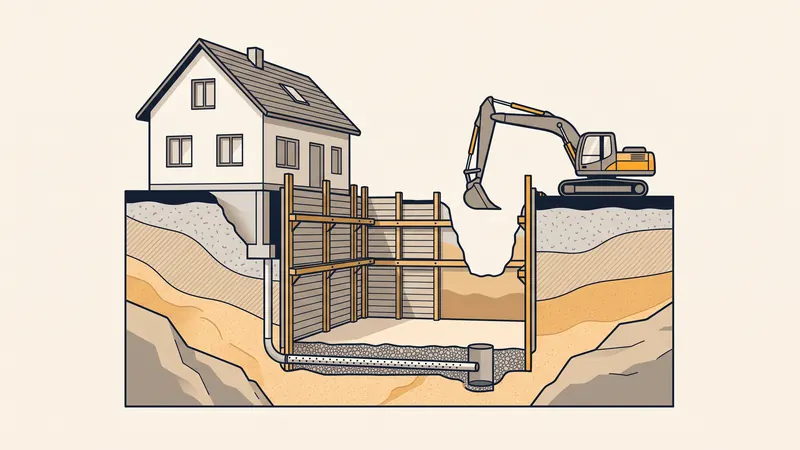

Terrassement Sous-Sol : Prix & Guide 2026
Créer un sous-sol ou une cave enterrée est l'un des projets de gros oeuvre les plus exigeants. À la différence d'un simple décaissement, le terrassement d'un sous-sol impose une excavation profonde de 2,5 à 3 mètres, le déplacement d'un volume considérable de déblais, un soutènement des terres pour la sécurité du chantier et une gestion rigoureuse de l'eau. Autant de postes qui font grimper la facture, surtout en région PACA où le sous-sol rocheux calcaire est omniprésent. Voici notre guide expert des prix du terrassement de sous-sol en 2026 à Aix-en-Provence et dans toute la Provence.

Pourquoi le terrassement d'un sous-sol est un chantier à part
Un sous-sol habitable ou une cave enterrée se distingue d'un vide sanitaire ou d'un décaissement classique par sa profondeur d'excavation. Là où des fondations descendent à 0,80 - 1,20 m, un sous-sol exige généralement une fouille de 2,50 à 3 mètres pour offrir une hauteur sous plafond confortable une fois la dalle et les retombées coulées.
Cette profondeur change tout. Elle génère un gros volume de déblais, impose des mesures de soutènement des terres obligatoires au-delà de 1,30 m, complique l'accès des engins et expose le chantier au risque de venue d'eau ou de nappe. Chacun de ces enjeux se traduit par un poste de coût supplémentaire qu'il faut anticiper dès le devis.

Prix du terrassement de sous-sol au m³ selon le sol
Le terrassement de sous-sol se chiffre au mètre cube excavé et non au m², car c'est bien un volume de terre que l'on extrait. Le facteur déterminant reste la nature du sol : un terrain meuble se creuse vite, tandis qu'un sous-sol rocheux exige un brise-roche hydraulique (BRH) qui ralentit le chantier et fait bondir le prix.
| Nature du sol | Prix excavation (€/m³ HT) | Méthode / engin |
|---|---|---|
| Terre végétale / sol meuble | 25 - 35 €/m³ | Pelle mécanique standard |
| Sol argileux ou caillouteux | 35 - 45 €/m³ | Pelle godet + tri des blocs |
| Sol calcaire compact | 50 - 75 €/m³ | Pelle + brise-roche hydraulique |
| Sol rocheux dur | 75 - 100 €/m³ | BRH intensif / micro-minage |
Pour estimer le volume, multipliez la surface du sous-sol par la profondeur de fouille. Notre article comment calculer le volume de terrassement détaille la méthode et l'incontournable coefficient de foisonnement. À titre indicatif, voici le coût total du terrassement d'un sous-sol de 100 m² excavé à 2,7 m (environ 270 m³ en place) :
| Nature du sol | Volume excavé | Budget terrassement complet (HT) |
|---|---|---|
| Sol meuble | ~ 270 m³ | 18 000 - 26 000 € |
| Sol calcaire compact | ~ 270 m³ | 28 000 - 42 000 € |
| Sol rocheux PACA (BRH) | ~ 270 m³ | 40 000 - 60 000 € |
Ces budgets englobent l'excavation, l'évacuation des déblais, le soutènement et le drainage périphérique. Ils n'incluent pas le gros oeuvre (dalle, murs banchés, cuvelage béton), qui relève du maçon.
Le détail des postes de coût d'un sous-sol
Pour comprendre le devis de votre terrassier, voici la décomposition des principaux postes spécifiques à l'excavation d'un sous-sol enterré.
| Poste de travaux | Fourchette de prix | Commentaire |
|---|---|---|
| Excavation profonde (2,5 - 3 m) | 25 - 100 €/m³ | Selon dureté du sol et BRH |
| Évacuation des déblais (gros volume) | 12 - 30 €/m³ | Transport + taxe décharge agréée |
| Blindage de fouille / talutage | 40 - 120 €/m² | Sécurité des parois > 1,30 m |
| Drainage périphérique + cuvelage | 40 - 90 €/ml | Drain, couche drainante, étanchéité |
| Rampe d'accès engins / véhicules | 1 500 - 5 000 € | Selon dénivelé et longueur |
L'évacuation des gravats et déblais pèse particulièrement lourd : un sous-sol génère plusieurs centaines de m³ de terre qui, une fois foisonnés, représentent des dizaines de rotations de camions vers la décharge agréée.
Les enjeux techniques d'un sous-sol enterré
Le soutènement des terres : blindage ou talutage
Dès que la fouille dépasse 1,30 m de profondeur, la protection des parois contre l'éboulement devient obligatoire. Deux techniques s'offrent à vous :
- Le talutage : on met les parois en pente (souvent 3/2 ou 45°). Simple et économique, mais il exige une emprise foncière disponible autour de la fouille, ce qui est rare en terrain contraint.
- Le blindage de fouille : panneaux blindés et étais hydrauliques maintiennent des parois verticales. Indispensable lorsque l'on creuse près des limites de propriété ou d'un mur mitoyen.
- La paroi berlinoise : profilés et plaques de blindage, utilisée quand le sous-sol jouxte une construction voisine à préserver.
La gestion de l'eau : drainage et cuvelage
Un sous-sol est par définition exposé aux infiltrations. La gestion de l'eau repose sur deux dispositifs complémentaires :
- Le drainage périphérique : un drain agricole posé en pied de fouille, enrobé de gravillons et de géotextile, collecte les eaux et les évacue vers un exutoire ou un puisard.
- Le cuvelage : lorsque le sous-sol descend sous le niveau de la nappe phréatique, on réalise une étanchéité (par l'extérieur ou par l'intérieur) pour rendre la cuve béton totalement étanche.
En cas de venue d'eau pendant les travaux, un pompage de rabattement de nappe maintient la fouille au sec le temps du chantier.
L'étude de sol G2 et la distance aux limites
Avant tout terrassement de sous-sol, une étude de sol G2 est vivement recommandée. Elle révèle la profondeur du rocher, le niveau de la nappe et les caractéristiques mécaniques du terrain, données qui conditionnent le dimensionnement du soutènement et du drainage. Par ailleurs, creuser près d'une limite séparative est encadré par le Code civil et le PLU : une fouille profonde à proximité du bâti voisin peut imposer un soutènement renforcé pour éviter tout désordre.
L'accès des engins
Sortir des centaines de m³ par une fouille de 3 m suppose une rampe d'accès pour les engins et les camions, ou à défaut une extraction par grappin et grue. L'accessibilité du terrain est donc un paramètre central du devis.
Obtenez Votre Devis Sous-Sol Gratuit
Chez STP Terrassement, nous excavons sous-sols et caves enterrées à Aix-en-Provence et dans toute la PACA, y compris en sol rocheux avec brise-roche hydraulique. Devis détaillé sous 24h.
Demandez votre devis gratuitSous-sol en PACA : le défi du rocher calcaire
La région d'Aix-en-Provence et la Provence en général reposent sur un sous-sol calcaire dur. Concrètement, cela signifie que l'excavation d'un sous-sol y nécessite presque systématiquement un brise-roche hydraulique, voire du micro-minage dans les bancs les plus durs. Le rendement chute, la durée s'allonge et le coût d'excavation peut être multiplié par deux ou trois par rapport à un sol meuble.
À cela s'ajoute un poste d'évacuation très lourd : les déblais rocheux sont denses, volumineux après foisonnement, et leur transport vers une plateforme de concassage ou une décharge agréée représente une part majeure du budget.
L'alternative à considérer : si votre projet ne réclame pas impérativement un volume habitable enterré, le vide sanitaire est une solution nettement plus économique en terrain rocheux. L'excavation y est bien moins profonde, sans soutènement lourd ni cuvelage, ce qui divise sensiblement la facture.
Exemple de chantier réel à Aix-en-Provence
Sous-sol enterré pour une villa à Venelles
Projet : Excavation d'un sous-sol enterré de 95 m² (cave à vin + garage + buanderie) sous une villa neuve.
Localisation : Venelles, au nord d'Aix-en-Provence.
Profondeur : 2,80 m, soit environ 265 m³ en place.
Durée : 11 jours ouvrés.
Défis rencontrés : Banc de calcaire dur dès 1,10 m de profondeur, terrain mitoyen sur la face est imposant un soutènement vertical, et accès par une voie en pente.
Solution STP : Mobilisation d'une pelle 22 t équipée d'un BRH pour fracturer le rocher, mise en place d'un blindage de fouille sur la limite mitoyenne pour sécuriser la parcelle voisine, et talutage sur les trois autres faces où l'emprise le permettait. Réalisation d'une rampe d'accès provisoire pour les camions 8x4 et organisation d'une noria d'évacuation des déblais calcaires vers une plateforme de concassage à 9 km. Pose d'un drain périphérique en pied de fouille raccordé à un puisard.
Résultat : Fouille livrée au niveau fini (±2 cm), parois sécurisées et fond drainé prêt pour le coulage de la dalle. Facture finale conforme au devis (46 800 € TTC), les déblais rocheux ayant été valorisés en concassé, réduisant la taxe de décharge.
Les erreurs courantes à éviter
- Faire l'impasse sur l'étude de sol G2. Sans connaître la profondeur du rocher ni le niveau de la nappe, le soutènement et le drainage sont mal dimensionnés : les surcoûts en cours de chantier peuvent exploser.
- Négliger le soutènement des terres. Une paroi de 3 m laissée verticale sans blindage ni talus est un danger mortel et une infraction. La sécurité du chantier n'est jamais une option.
- Sous-estimer le volume de déblais. Avec le foisonnement (1,2 à 1,4) et la densité du rocher, le poste d'évacuation est souvent le plus lourd. Une mauvaise estimation fausse tout le budget.
- Oublier la gestion de l'eau. Un sous-sol sans drainage périphérique ni cuvelage adapté finit inondé. L'eau est l'ennemi numéro un d'un volume enterré.
- Ignorer la distance aux limites et au voisin. Creuser profond près d'un mur mitoyen sans soutènement adapté peut provoquer des désordres sur le bâti voisin et engager votre responsabilité.
- Choisir un terrassier sans garantie décennale. Sur un ouvrage enterré, les désordres se révèlent parfois des années plus tard. Exigez toujours l'attestation décennale à jour.
Questions fréquentes
Quel est le prix d'un terrassement de sous-sol au m³ en 2026 ?
Le terrassement d'un sous-sol coûte entre 25 et 45 €/m³ en sol meuble et de 50 à 100 €/m³ en sol calcaire ou rocheux nécessitant un brise-roche hydraulique. À ce prix d'excavation s'ajoutent l'évacuation des déblais, le soutènement et le drainage.
Combien coûte le terrassement complet d'un sous-sol de 100 m² ?
Pour un sous-sol de 100 m² excavé à 2,7 m de profondeur (environ 270 m³), comptez un budget terrassement de 18 000 à 35 000 € HT en sol meuble et de 35 000 à 60 000 € HT en sol rocheux PACA, postes d'évacuation, blindage et drainage inclus.
Pourquoi le terrassement d'un sous-sol est-il si cher ?
Un sous-sol implique une excavation profonde de 2,5 à 3 m, donc un volume de déblais considérable, des frais d'évacuation élevés, un soutènement des terres obligatoire pour la sécurité et une gestion de l'eau (drainage, cuvelage). Ces postes cumulés expliquent le coût élevé par rapport à un simple décaissement.
Faut-il blinder ou taluter une fouille de sous-sol ?
Au-delà de 1,30 m de profondeur, la réglementation impose une protection contre l'éboulement : soit un talutage (mise en pente des parois) si la place le permet, soit un blindage de fouille (panneaux et étais hydrauliques). Le choix dépend de l'emprise disponible et de la proximité des limites de propriété.
Quelle distance respecter par rapport au voisin pour creuser un sous-sol ?
Le creusement à proximité d'une limite séparative ou d'un mur mitoyen est encadré par le Code civil et le PLU. Une fouille profonde près d'une construction voisine peut nécessiter une étude spécifique, voire un soutènement de type paroi berlinoise, pour éviter tout désordre sur le bâti mitoyen.
Une étude de sol G2 est-elle obligatoire pour un sous-sol ?
Elle n'est pas légalement obligatoire dans tous les cas mais fortement recommandée pour un sous-sol. L'étude géotechnique G2 caractérise la nature du sol, la présence de rocher et surtout le niveau de la nappe phréatique, données indispensables pour dimensionner le soutènement, le drainage et le cuvelage.
Comment gérer l'eau et la nappe phréatique dans un sous-sol ?
La gestion de l'eau repose sur un drainage périphérique (drain agricole en pied de fouille + couche drainante) raccordé à un exutoire, et sur un cuvelage (étanchéité par l'intérieur ou l'extérieur) lorsque le sous-sol est sous le niveau de la nappe. En cas de venue d'eau pendant le chantier, un pompage de rabattement est mis en place.
Un sous-sol ou un vide sanitaire : que choisir en PACA ?
En région rocheuse comme Aix-en-Provence, le terrassement d'un sous-sol au BRH coûte cher. Si vous n'avez pas besoin d'un volume habitable enterré, un vide sanitaire est une alternative bien plus économique : excavation réduite, pas de soutènement profond ni de cuvelage lourd.
Pour aller plus loin
- Prix du terrassement en sol rocheux (BRH)
- Prix du terrassement au m² en 2026
- Prix d'un vide sanitaire : l'alternative économique
- Prix évacuation gravats & déblais
- Étude de sol G1 G2 : utilité et prix
- Comment calculer le volume de terrassement
- Service terrassement STP à Aix-en-Provence
- Contactez STP Terrassement
Pourquoi faire appel à un pro comme STP Terrassement
Confier l'excavation de votre sous-sol à STP Terrassement, c'est s'appuyer sur une entreprise locale implantée à Simiane-Collongue (13109) et intervenant chaque jour à Aix-en-Provence et dans toute la région PACA. Nos équipes maîtrisent les chantiers d'excavation profonde en sol rocheux : pelles de forte capacité équipées de brise-roches hydrauliques, blindage de fouille, talutage, drainage périphérique et organisation des norias d'évacuation. Nous disposons d'une garantie décennale en cours de validité et de plus de 15 ans d'expérience sur le terrain provençal. Nous établissons un devis détaillé gratuit et sans engagement sous 24h, nous sécurisons le chantier dans le respect strict de la réglementation, nous tenons le budget validé et nous fournissons à la réception tous les documents de conformité. Demandez votre devis gratuit en ligne ou appelez-nous au 07 45 14 20 49 pour échanger directement avec un chargé d'affaires.